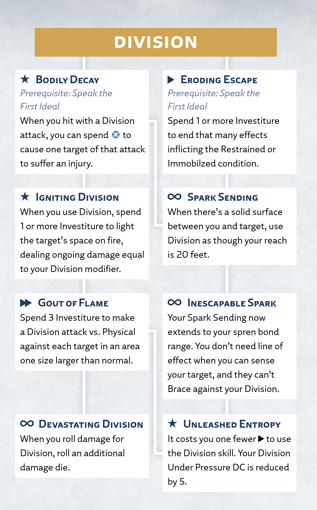

Division
Intellect
The surge of Division allows you to destroy and decay, causing your target to atrophy, crumble into dust, or fall apart in other ways.
Division Surge
Radiant Orders: Dustbringer, Skybreaker
Activation: ▶▶
You can use this surge to decay a character, object, or area within your reach. You must have a hand free and touch the target.
Targeting a Character. You can target a character regardless of their size. Spend 1 Investiture to make a melee Division attack against the Spiritual defense of the target, rolling 3d4 spirit damage. If this reduces the target to 0 health, they crumble into dust and die. The size of this attack's damage dice increases with your ranks in Division; at 2 ranks, roll 3d6 (instead of 3d4), and so on. As usual, on a hit, add your Division modifier to damage, and on a miss, you can spend 1 focus to graze with the attack.
Targeting an Object or Area. To destroy an object or the contents of an area, spend Investiture equal to the number of surge ranks required to affect a target of that size: 1 for Small, 2 for Medium, and so on. As usual, this object or area can't exceed the surge size for your ranks in Division (see the Surge Scaling table at the beginning of this chapter), even if you have more Investiture than that.
If you're in combat or another tense situation, you must succeed on a Division test (see "Division Under Pressure" to determine the DC). On a success (or if you're not under pressure), your target decays in a manner of your choosing. For example, you could crumble the object into dust, etch writing or art into the object, destroy parts of a object to form a smaller object, or create a smokescreen that lasts for 1 round in the destroyed object's area.
If you attempt elaborate etching or shaping in this way, it takes additional time and actions. Depending on complexity, the GM might also require a Division skill test (or increase the DC for that test).
You can't use this surge on Invested objects (like Shardplate) or objects that have been infused with Stormlight (like infused spheres or objects affected by surges).
Using Division
In addition to the basic surge rules above, this section provides more guidance on using or interacting with this surge in your game.
Division Under Pressure
It requires considerable concentration and accuracy to use Division while moving, working quickly, or avoiding threats. While in combat or another tense situation (like a Mission or Pursuit), you must succeed on a Division test before destroying an object or area. The DC for this test is determined by the material you're targeting, as shown on the Division Under Pressure table.
You can't target materials in this way while they're in the body of an unwilling living character; instead, target the character's Spiritual defense as described in the Division surge.
| Material | DC |
|---|---|
| Clear air | DC 0 |
| Vapors like smoke and gas | DC 5 |
| Liquids like blood, water, and oil | DC 10 |
| Organics like flesh, bone, and pulp | DC 15 |
| Solids like metal, stone, and crystal | DC 20 |
Division Against Others
If a character is willing, you can easily destroy an object in their possession. However, to destroy an object held by an unwilling character or to destroy a portion of a surface that's supporting most of their weight (such as the ground they're standing on or a wall they're climbing), you must succeed on a Division test against either that character's Physical defense or the relevant DC on the Division Under Pressure table, whichever is higher. On a failure, you don't destroy that object and you don't spend Investiture on the attempt.
Division Talent Tree
Division Talents
The following talents, presented here in alphabetical order, appear in the Division talent tree for the Dustbringer and Skybreaker paths.
Bodily Decay
Prerequisite: Speak the First Ideal
Activation: ★
You atrophy the bodies of your enemies, inflicting debilitating wounds.
When you hit with a Division attack, you can spend ✧ to inflict an injury on one target of that attack.
Devastating Division
Prerequisite: Gout of Flame talent
Activation: ∞
Your Division is especially potent and destructive.
When you roll damage for Division or its talents, roll an additional damage die of the same size.
Eroding Escape
Prerequisite: Speak the First Ideal
Activation: ▶
Your ability to decay what you touch ensures you can't be contained for long.
Spend 1 Investiture or more to end that many effects on yourself or an ally within your reach. The chosen effects must either be applying the Immobilized or Restrained condition, or be adding a disadvantage to one or more physical tests.
Depending on the effect's source, this talent might not fully destroy the source at the GM's discretion, but it creates space or opportunity for your target to move around it or free themselves from its constraint. If the effect's source remains at the end of the target's next turn (such as when swimming or when wearing armor with the Cumbersome trait), the effect then reasserts itself.
Gout of Flame
Prerequisite: Igniting Division talent
Activation: ▶▶
You use Division to spray heat and flame across a wide area.
Spend 3 Investiture and choose an area up to one size larger than you can normally affect with your ranks in Division; if you already have 5 ranks in Division, you can instead affect an area up to 25 feet in each dimension.
Make a Division attack against the Physical defense of each target who is at least partially within the chosen area, rolling 3d4 energy damage. The size of these damage dice increases with your ranks in Division; at 2 ranks, roll 3d6 (instead of 3d4), and so on.
Igniting Division
Prerequisite: Bodily Decay talent
Activation: ★
You can make anything burn, even materials that are usually nonflammable.
When you affect a target with Division, you can spend 1 or more additional Investiture to cause that target to catch fire for a number of rounds equal to the Investiture spent. If you didn't already have to make a Division test when you affected that target (see "Division Under Pressure"), you must succeed on one now to do so.
For the duration, the target becomes Afflicted, and the area within 5 feet of the target is lit on fire and becomes dangerous terrain. Both effects deal energy damage equal to your Division modifier. At the GM's discretion, the dangerous terrain can spread on subsequent rounds.
The target or a character within reach of it can Use a Skill to make an Agility or Athletics test opposed by your Division. If they succeed, the target's Afflicted condition ends early, but the ignited area continues to burn.
Inescapable Spark
Prerequisite: Spark Sending talent
Activation: ∞
You can send your spark to far greater distances, seeking out targets around corners and through walls and corners.
You can use Division and its talents as though your reach equals your spren bond range. You still need a solid surface from you to your target (such as a wall or floor) along which you can send an entropic spark, but you don't need line of effect to your target while you can sense them.
Additionally, your target can't benefit from the Brace action against any of your Division attacks.
Spark Sending
Prerequisite: Bodily Decay talent or Eroding Escape talent
Activation: ∞
You annihilate your targets from a distance by sending your entropic spark racing through a physical object, creating a chain reaction at its destination.
You can use Division and its talents as though your reach is 20 feet, as long as there is a solid surface from you to your target (such as a wall or floor) along which you can send an entropic spark.
Unleashed Entropy
Prerequisite: Spark Sending talent or Gout of Flame talent
Activation: ∞
You've grown so powerful that the ability to destroy everything around you is almost alarmingly easy.
It costs you one fewer ▶ to use Division (but not its talents). Additionally, your DCs on the Division Under Pressure table are reduced by 5.